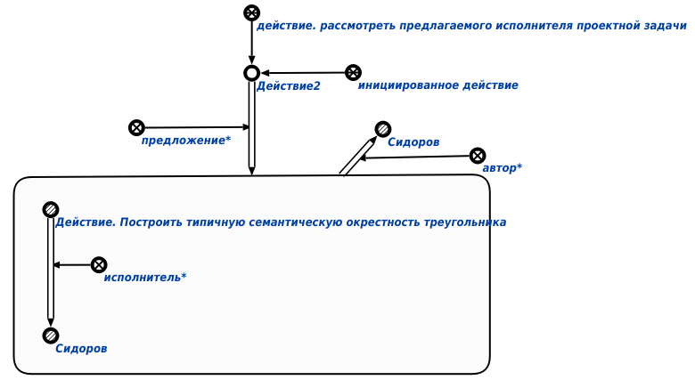

Команда формирования предложения исполнителя проектного задания предназначена для формирования предложения* исполнителя* проектного задания. Первым аргументом запроса является знак действия, соответствующий проектному заданию, вторым аргументом - знак зарегистрированного пользователя*, предлагаемого в качестве исполнителя*. Результатом выполнения команды является назначение исполнителя* на конкретное проектное задание, что описывается с помощью специальной структуры. Например:
